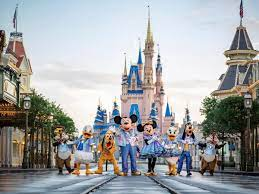

Disney- Sobre
A empresa é conhecida por seu compromisso em criar experiências mágicas para seus fãs, e a incorporação da tecnologia desempenha um papel fundamental nessa busca. Alguns exemplos pelo qual a magia da Disney encontra a tecnologia:
Animação Revolucionária: A Disney revolucionou a indústria de animação com filmes como "Branca de Neve e os Sete Anões" (1937) e "Fantasia" (1940), introduzindo técnicas avançadas de animação, como o uso de celuloides e câmeras multiplano.
Parques Temáticos Interativos: Os parques temáticos da Disney incorporam tecnologia de ponta para criar atrações interativas e imersivas. Exemplos incluem atrações com áudio-animatrônicos avançados, realidade aumentada e realidade virtual.
Sistemas de Fila Inteligentes: A Disney utiliza tecnologia para melhorar a experiência dos visitantes, incluindo sistemas de fila virtual, aplicativos móveis para reserva de atrações e sensores que monitoram as multidões para otimizar o fluxo de visitantes.
Entretenimento Digital: A aquisição da Pixar pela Disney trouxe avanços significativos em animação por computador, resultando em filmes como "Toy Story" e "Frozen", que incorporam tecnologia de renderização avançada.
Realidade Virtual e Aumentada: A Disney tem experimentado com tecnologias de realidade virtual (VR) e realidade aumentada (AR) em atrações e experiências, como "Star Wars: Galaxy's Edge", onde os visitantes podem participar de missões interativas usando aplicativos de smartphones.
Streaming de Conteúdo: O Disney+ é um exemplo recente de como a Disney está abraçando a tecnologia para distribuir seu conteúdo diretamente aos consumidores, competindo com outros serviços de streaming líderes no mercado.
Inteligência Artificial (IA): A Disney utiliza IA em várias áreas, desde personalização de experiências para visitantes de parques até chatbots e assistentes virtuais que interagem com os fãs online.
Efeitos Especiais no Cinema: A Disney é conhecida por suas contribuições aos efeitos especiais no cinema, incluindo o uso de chroma key, miniaturas e efeitos digitais avançados em filmes como "Piratas do Caribe" e "Star Wars".
A combinação da criatividade da Disney com as mais recentes tecnologias continua a criar experiências mágicas e inovadoras para fãs de todas as idades, demonstrando como a magia da Disney se encontra de maneira harmoniosa com a evolução tecnológica.

www.cnnbrasil
|